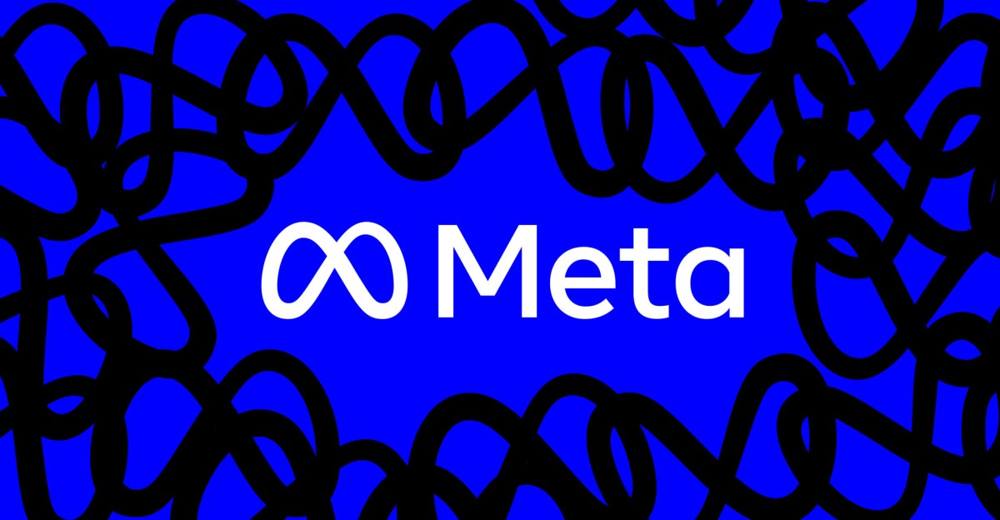
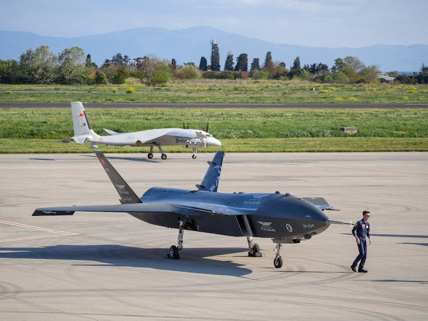
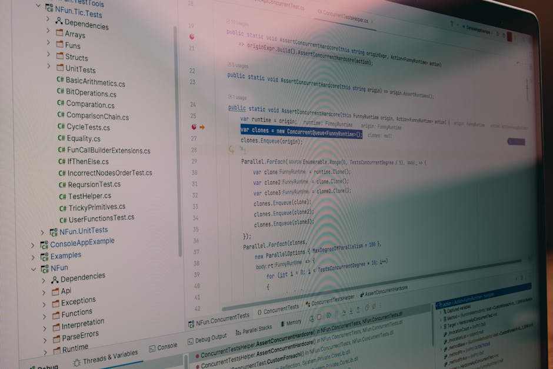
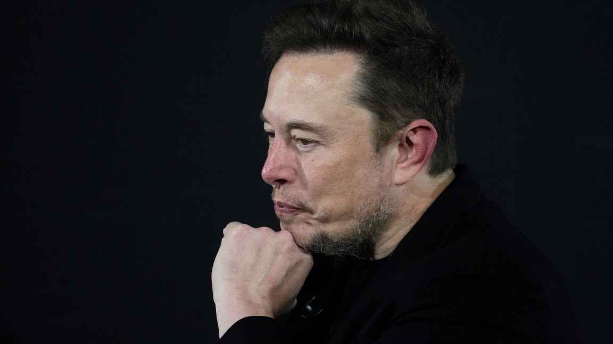
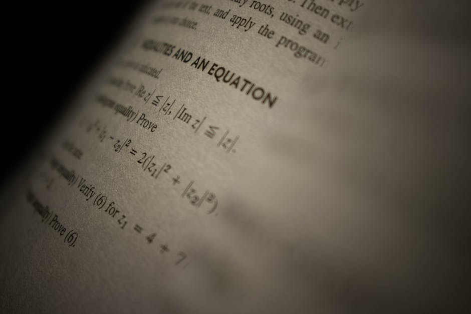
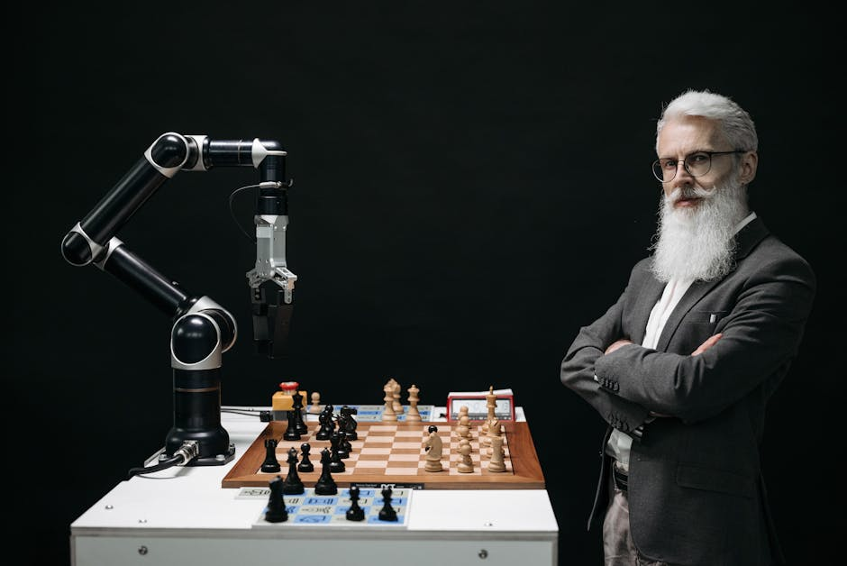

AI DAILY
AI 行业日报
2026年3月15日 · 精选 10 条
01人事变动
Meta考虑裁员20%，约15800人将受影响

据 Reuters 报道，Meta 正考虑裁员最多 20%，约 15800 个岗位。如果实施，这将是自 2022 年 11 月至 2023 年初裁员 22000 人以来，公司规模最大的一轮裁减。
裁员背景是 Meta 几乎放弃了 VR 和元宇宙方向，大幅削减预算并关闭工作室，转而投入大量资源吸引 AI 人才、建设数据中心并收购 AI 公司。Meta 发言人称"这是对理论性方案的推测报道"。
INSIGHT
20% 裁员换 AI 基建支出——Meta 的逻辑很清楚：元宇宙的人力成本要转换成 GPU 集群的电费。但 15800 人的规模意味着这不是修剪，是重构。问题是，AI 投入的回报周期远长于华尔街的耐心。
02融资收购
Kimi估值3个月翻4倍至180亿美元
据《科创板日报》独家报道，月之暗面 Kimi 最新估值已升至 180 亿美元，3 个月内翻了 4 倍。新一轮 10 亿美元融资正在进行中。
不到 3 个月，Kimi 已完成 3 轮融资，创下近年国内大模型连续融资最多纪录，也是国内估值最快突破百亿美元的独角兽公司。
INSIGHT
3 个月 3 轮融资、估值翻 4 倍——资本市场对 Kimi 的押注节奏，和当年对 OpenAI 的加速几乎同频。但 180 亿美元估值对应的商业化压力，也在同步放大。
03行业动态
美国陆军与Anduril签下200亿美元10年合同

美国陆军宣布与国防科技公司 Anduril 签署一份 10 年合同，总价值最高 200 亿美元。合同包含 5 年基础期和 5 年可选延期，涵盖硬件、软件、基础设施和服务。
Anduril 由 Oculus 创始人 Palmer Luckey 联合创立，去年营收约 20 亿美元，目前正在以 600 亿美元估值进行新一轮融资。陆军称该合同将整合此前超过 120 项独立采购行为。
INSIGHT
200 亿美元、10 年、120 项采购整合为一——五角大楼用"打包合同"的方式把 Anduril 锁定为核心供应商。与此同时 Anthropic 在告国防部、OpenAI 高管因军方合同离职——AI 公司与军方的关系正在加速分化。
04产品发布
ChatGPT上线App集成：Spotify、Uber等可直接对话操作

OpenAI 在 ChatGPT 中上线 App 集成功能，用户可以连接 Spotify、Uber、DoorDash、Booking.com、Canva、Figma、Expedia 等第三方应用，直接在对话中操作——比如让 ChatGPT 创建 Spotify 播放列表或叫一辆 Uber。
用户在 Settings → Apps and Connectors 中授权连接。连接后 ChatGPT 可以读取应用数据（如播放历史、订单记录）以提供个性化服务。用户可以随时断开连接。
INSIGHT
ChatGPT 正在从"对话框"变成"操作系统"。接入 Spotify、Uber、DoorDash 的逻辑是把自己做成用户行为的统一入口——一旦习惯用对话完成日常操作，单独打开 App 的理由就越来越少。
05技术突破
Cursor发布CursorBench：AI编码评测基准重新洗牌

AI 编程工具 Cursor 发布新评测基准 CursorBench，专门衡量 AI 在真实编码场景中的"智能体"能力。结果显示，Claude Haiku 4.5 从 SWE-Bench 的 73.3 分跌至 29.4 分，Claude Sonnet 4.5 从 77.2 分跌至 37.9 分。
CursorBench 与 SWE-Bench 的核心区别在于三点：任务来自 Cursor 平台真实开发数据而非 GitHub issue；评分维度包含效率和 token 约束，不只是"能不能解决"；任务描述保持"模糊"以模拟真实交互。
INSIGHT
SWE-Bench 上模型分数都挤在 70-80 分，区分度消失了。CursorBench 加入 token 约束和真实任务后，分数直接腰斩——说明当前模型离"高效完成复杂工作"还有很大距离。谁出题，谁就掌握了叙事权。
06行业动态
xAI内部持续动荡：SpaceX"空降审计"，两名联创出走

马斯克在 Grok 编码产品落后于 Anthropic Claude Code 和 OpenAI Codex 后，对 xAI 发起新一轮裁员整顿。SpaceX 和 Tesla 的管理层被派驻审查 xAI 员工工作，部分人员被直接开除。
两名联合创始人本周离开——负责技术的 Zihang Dai 和负责 Grok 预训练的 Guodong Zhang。马斯克在 X 上发帖称"xAI 第一次没有建好，正在从头重建"。此前 SpaceX 已以 12.5 亿美元与 xAI 合并，马斯克需在 6 月前完成可能是史上最大规模的 IPO。
INSIGHT
"从头重建"——距 xAI 成立才 2 年。Grok 在编码和付费用户上都没跑起来，马斯克的解法是空降 SpaceX 的人来做审计。但 AI 研发和造火箭的管理逻辑完全不同，联创连续出走才是真正的危险信号。
07行业动态
陶哲轩创办SAIR Foundation：用AI重塑基础科学研究

数学家陶哲轩以联合创始人身份发起非营利组织 SAIR Foundation，目标是连接学术界和产业界，推动两大方向：用科学方法打造 AI，以及用 AI 重塑基础科学研究。多位诺贝尔奖和图灵奖得主参与。
陶哲轩指出商业大模型的两个核心短板：幻觉（无法保证可验证性）和缺乏置信度表达（不会说"我不确定"）。他认为科研需要专用 AI 工具，而非直接使用通用大模型。"未来可能会有 10000 个陶哲轩。"
INSIGHT
陶哲轩切的角度很精准——科研场景要的不是"什么都能做"的通用模型，而是能表达不确定性的专用工具。当模型学会说"我有 60% 把握"，它对科学家的价值会比"我 100% 确定"高出几个量级。
08产品发布
Gemini驱动谷歌地图大升级：Ask Maps + 沉浸式3D导航
Google CEO 皮查伊宣布谷歌地图推出两项 Gemini 驱动的新功能——Ask Maps 和沉浸式导航。Ask Maps 支持用自然语言提出复杂需求，如"找一家环境好、晚上 7 点能坐 4 人的素食餐厅"，Gemini 会分析评论和照片后推荐。
沉浸式导航以 3D 视图呈现建筑、立交桥和地形，并高亮车道、信号灯等道路细节。谷歌称这是地图 10 多年来最大的一次升级。目前 Ask Maps 已在美国和印度上线。
INSIGHT
高德、百度早就有 3D 导航和行程规划，谷歌地图反而是追赶方。但 Gemini 的自然语言理解深度是杀手锏——"附近适合一家人徒步 3 小时还能解决午餐的公园"，这种多约束查询才是 AI 地图真正的价值。
09产品发布
腾讯"龙虾"产品矩阵密集上线
腾讯在一周内密集推出"龙虾"（OpenClaw）系列产品：办公工具 WorkBuddy、接入微信和 QQ 的 AI 代理 QClaw、面向开发者的腾讯云 Lighthouse，以及安全工具 Skillhub。马化腾透露还将推出自研龙虾、本地虾、云端虾、企业虾等更多产品。
腾讯"摆摊帮装虾"线下活动当天帮 500 多人完成装机，参与者约 80% 为非技术背景。团队坦言"龙虾的热度确实高过能力"，但认为它是普通人拥抱 AI 浪潮的第一步。安全方面采用 Agent 对抗 Agent 的自动化审核机制。
INSIGHT
腾讯的打法是"先铺生态再补能力"——用微信和 QQ 的入口做分发，用闭源架构做安全隔离。坦承"热度高过能力"反而是聪明的预期管理。关键是 WorkBuddy 的留存数据，装了之后有多少人还在用。
10行业动态
DeepSeek V4 vs 腾讯混元：四月同台交卷

2026 年 4 月，DeepSeek V4 和腾讯混元新模型将几乎同期发布。DeepSeek V4 主打多模态、条件记忆机制，以及深度适配国产芯片（华为昇腾等），有望成为首个完全运行在国产算力上的顶级大模型。
腾讯方面由 2025 年底回国的姚顺雨担任首席 AI 科学家主导。此前腾讯在元宝中接入 DeepSeek，用户和活跃度明显回升——这相当于腾讯用流量换时间。但 4 月混元上线后，核心问题是：用户认的是元宝还是 DeepSeek？
INSIGHT
两家公司走向同一个方向——长上下文、长期记忆、Agent 可用——但路径相反。DeepSeek 从底层架构往应用走，腾讯从场景往模型走。4 月交卷的本质是腾讯要把元宝的"大脑"从 DeepSeek 手里赎回来。
由 Zayen知览 整理 · 构建者视角